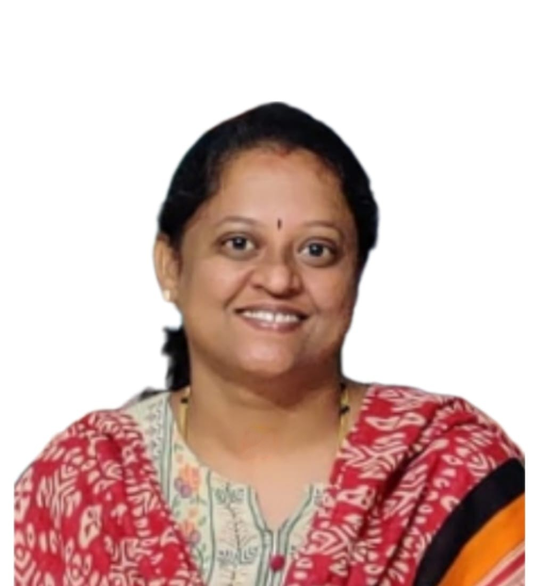

Summary

Software professional with 10+ years of experience including Android
applications (POS devices), Desktop Applications and Web based
Applications
Education
-
MCA (Master of Computer Applications), Year 2003 from Central College,
Bangalore University with an aggregate of 79%
-
BSc Computer Science, Year 2000 from Mount Carmel College, Bangalore
University, with an aggregate of 77%
Work experience
Lead Technology | Synechron Technologies Pvt Ltd.
Responsibilities
-
Development of XLAs, which are lua code files containing the business
logic
- Integration of the XLAs in Android application
- Interaction with product team for query resolution
-
End to end testing of the application to ensure it is free of any errors
- Providing timely builds to the QA team
- Defect fixing
Software Engineer | Nearex Technologies Pvt Ltd.
Responsibilities
-
Development of XLAs, which are lua code files containing the business
logic
- Integration of the XLAs in Android application
- Interaction with product team for query resolution
-
End to end testing of the application to ensure it is free of any errors
- Providing timely builds to the QA team
- Defect fixing
Software Engineer | Nearex Technologies Pvt Ltd.
Responsibilities
- Project planning and execution
- Allocation of tasks to the team
-
Implementing organization defined quality procedures in the project
- Interaction with client/onsite team for query resolution
- Status reporting to client and higher management
- Ensuring on time delivery of planned modules
Skills
Programming Languages:Lua, Java, C# .Net 2.0, .NET 3.0
Databases:
MS- SQL Server 2005, Oracle 8i
Tools (Software): PL SQL Developer, ERWin, ComponentOne Chart,
Dundas Chart, SSIS, SAS
UI Technologies: Javascript, HTML,
ASP.NET 2.0, ADO.NET, WCF
Web/Enterprise Servers: IIS 6.0
IDEs: Android Studio, Visual Studio Code, VS2005
Reporting Tools:
SSRS, Crystal Reports
Achievements
- Received the STAR award at Synechron
- Received the Surpass award at Synechron
Hobbies
Contact Details